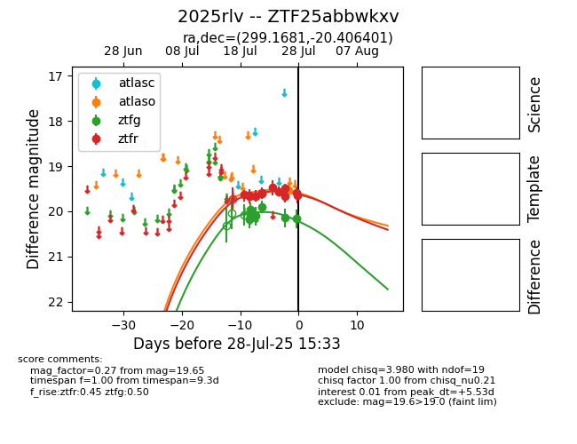

Target 2025rlv at 2025-07-28 15:33, see:
FINK: fink-portal.org/2025rlv
Lasair: lasair-ztf.lsst.ac.uk/objects/2025rlv
ALeRCE: alerce.online/object/2025rlv
TNS: wis-tns.org/object/2025rlv
YSE: ziggy.ucolick.org/yse/transient_detail/2025rlv
alt names
ZTF25abbwkxv (ztf,fink)
2025rlv (tns,yse)
coordinates:
equatorial (ra, dec) = (299.1681,-20.40640)
galactic (l, b) = (20.9863,-23.15530)
photometry
last atlaso=19.53, ztfg=20.16, ztfr=19.65
1 atlaso, 7 ztfg, 12 ztfr detections
